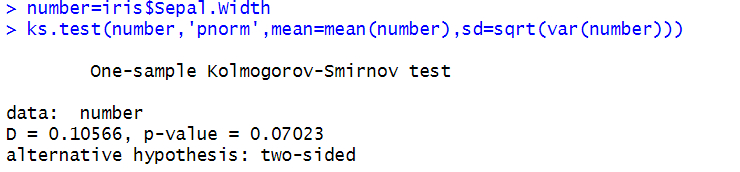
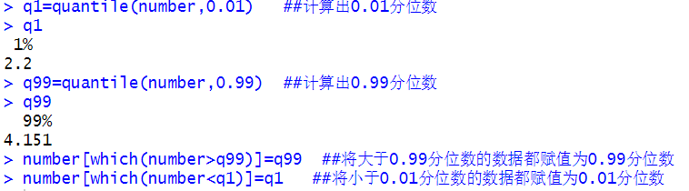
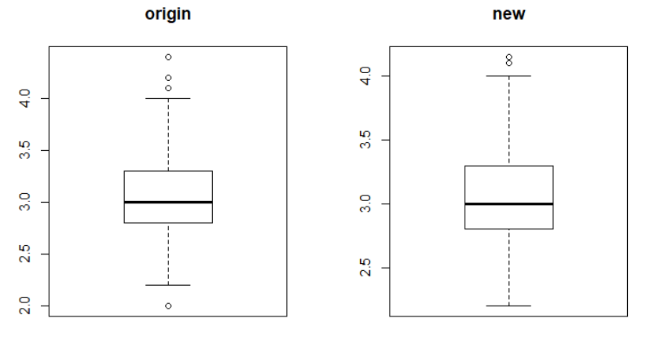

以DMwR程序包中iris（鸢尾花）数据集作为演示示例，该数据集含有150个样本，包括Sepal.length(花萼长度)、Sepal.width(花萼宽度)、Petal.length(花瓣长度)、Petal.width(花瓣宽度)以及Species(花的种类)这五个变量。在异常值识别模块中，我们已经对Spedal.width(花萼宽度)变量中进行了异常值识别，以下将通过盖帽法来对其进行异常值处理：

在使用盖帽法之前，为了处理的严谨性，我们需要求数据服从正态分布。藉此，首先通过KS检验判断该组数据是否服从正态分布，运行结果如下：
从检验结果来看,P值大于0.05，故可以认为该组数据服从正态分布。于是，我们使用盖帽法对原数据进行处理，并将结果以箱线图的形式呈现出来，运行结果如下所示：


从运行结果我们可以知道，花萼宽度的0.01分位数为2.2，0.99分位数为4.151；对比使用盖帽法前后的箱线图，我们可知异常值的情况得到了较好的改善。但处理后的数据仍存在异常值，说明盖帽法有待改善，对于这一部分异常值我们可以通过删除后进行合理插补来解决。